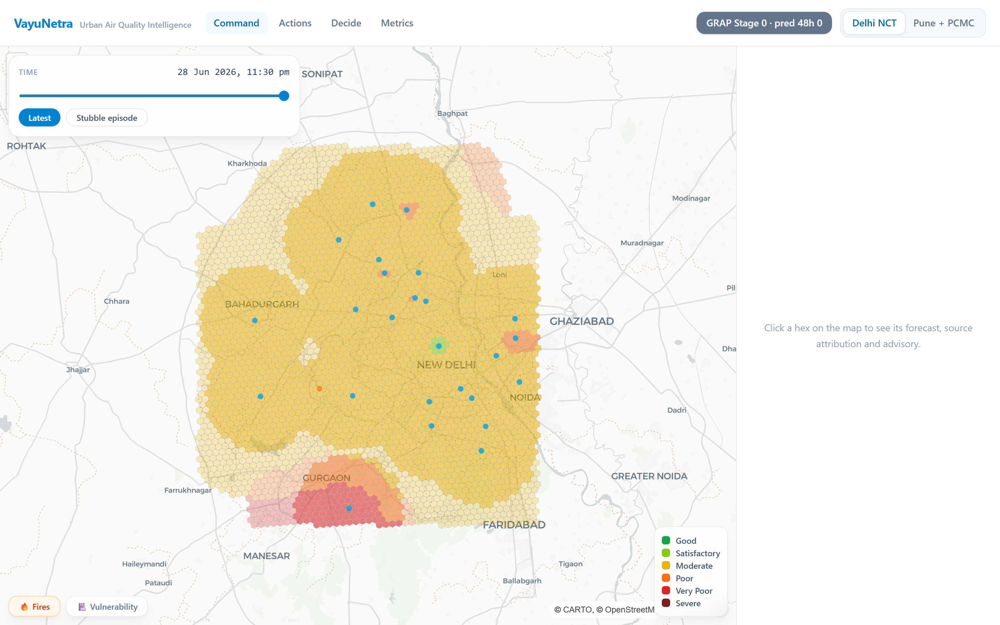
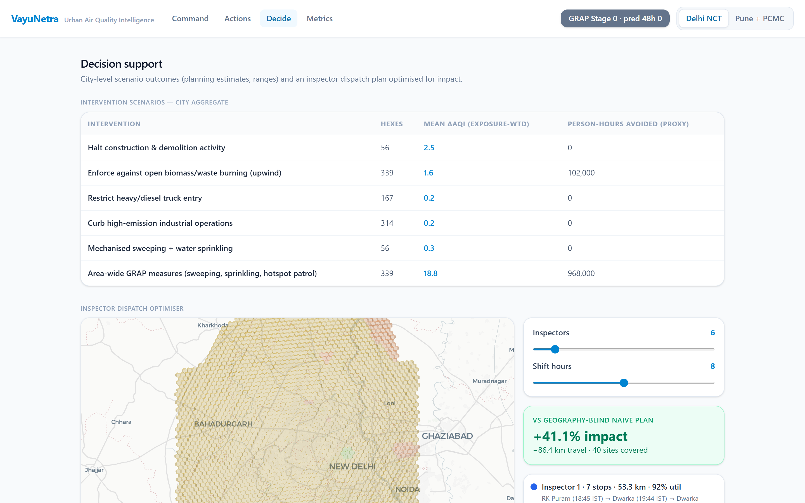
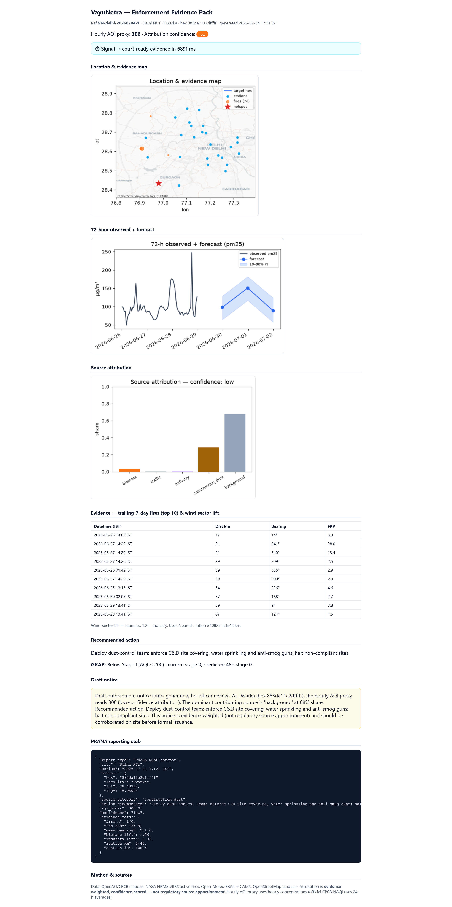
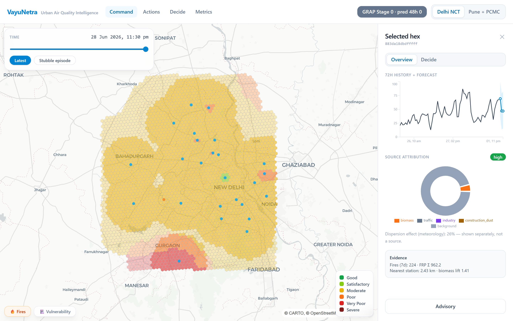

The data exists.
The layer to act on it didn't.
VayuNetra is that layer.
From a pollution signal to a court-ready enforcement order in seconds — source attribution, 72-hour hyperlocal forecasts, and inspector dispatch, fused from 5 real public data sources.

Live command view · Delhi · ~1 km H3 hexes coloured by CPCB AQI
(Lancet Planetary Health)
under NCAP
protocol (CAG audit, 2024)
Cities don't need more dashboards. They need decisions.
The closed loop
Signal → decision → action, every hour
The three capabilities the problem statement calls non-existent — plus the decision layer that turns them into orders.
Attribute
Which source is to blame, right now — 5 classes with a confidence badge. Two independent methods agree 82% on a real stubble day.
Forecast
24/48/72-hour PM2.5 at 1 km. Beats persistence, climatology & CAMS at every horizon — skill up to +0.27.
Prioritise
A ranked enforcement queue by severity × persistence × exposure × actionability — mapped to the responsible department.
Act
One click → a court-ready evidence pack with map, fire table, draft notice & PRANA stub — in under 5 seconds.
Protect
Citizen advisories in English, हिन्दी & मराठी — numbers injected, never hallucinated.
Decision support
Not just charts — decisions with a number on them
Every intervention shows a model-implied ΔAQI range — never a fake point estimate — with an inherited confidence tier, department, legal basis and a one-click Generate order. Confidence is a word, never an invented percentage.

Enforcement evidence
Signal → court-ready evidence in seconds
A self-contained document — location map, 72-h forecast with prediction interval, source attribution, trailing-7-day fire table with wind-sector lift, a draft enforcement notice and a CPCB PRANA reporting stub — generated on one click, versus days of manual work.

Attribution + forecast
Click any hex. See who's responsible, and what's next.
A 72-hour observed + forecast curve with an uncertainty band, and a source-attribution donut across five classes with an inherited confidence badge — the meteorology "dispersion effect" shown separately, never smuggled in as a source.
- checkTreeSHAP temporal + spatial ridge + wind-sector lift
- checkEvidence-weighted — not regulatory apportionment (labelled)
- checkPrediction intervals from honest rolling-origin backtests

Measured, not claimed
Real results on real data
peak forecast skill vs persistence (Pune 72 h)
agreement between 2 independent attribution methods
enforcement impact vs a geography-blind dispatch
from signal to a court-ready evidence pack
Model RMSE ≈ 30 (Delhi) / 22 (Pune) µg/m³ — beats persistence, climatology and CAMS at every horizon. Full backtest in docs/metrics.md.
Built on real public infrastructure
A new city is one YAML block away.
Delhi and Pune run today. Your city could run tomorrow — no new sensors, no fabricated data.